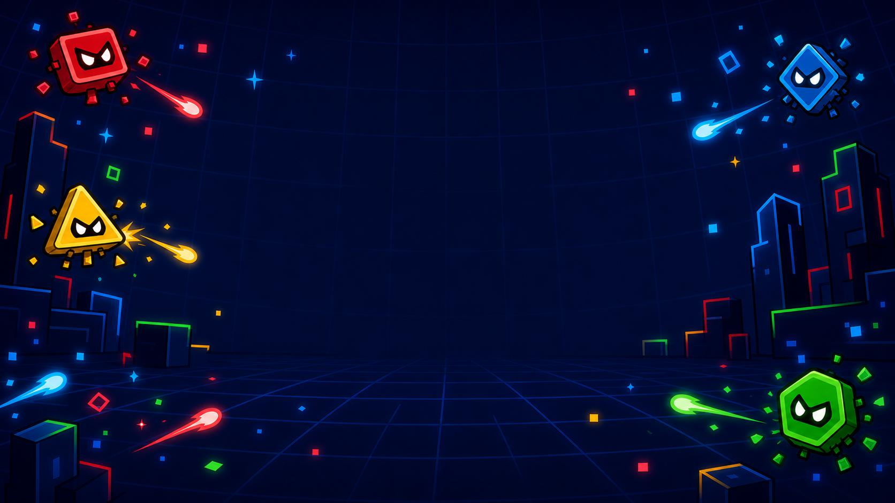

Village☾
AI NPC · 2026.04–현재
마피아 마을
NPC들이 서로 대화하는 마을에서 플레이어도 주민 한 명으로 참여합니다.
3인 자율 스터디에서 게임 규칙, NPC 페르소나, Unity 클라이언트와 Agent Framework API를 구현하고 웹 배포를 맡았습니다.
마을 데모 실행 ↗UNITY · PROCEDURAL RPG
탐험할 때마다 방과 복도가 달라지는 던전 RPG. 맵을 청크로 나누고 길 찾기와 오브젝트 생성을 여러 프레임에 분산했습니다.
던전 생성 과정 보기 →
NPC들이 서로 대화하는 마을에서 플레이어도 주민 한 명으로 참여합니다.
3인 자율 스터디에서 게임 규칙, NPC 페르소나, Unity 클라이언트와 Agent Framework API를 구현하고 웹 배포를 맡았습니다.
마을 데모 실행 ↗
색상에 맞는 무기를 골라 적의 셸을 깨는 네온 액션 프로토타입입니다.
무기의 유효 색상과 실제 공격 판정, 보스의 스킬 발동을 Unity에서 검증하며 전투를 다듬고 있습니다.
전투 데모 실행 ↗
여러 사용자가 같은 공간에서 재료를 집고 조합해 향을 만드는 VR 게임입니다.
9인 팀의 개발 PL로 조합 규칙, 물체 소유권과 상태 동기화를 다뤘습니다.
개발 과정 ↗
드론 영상의 탐지 결과를 지도에서 확인하는 산학협력 프로젝트입니다.
YOLO 모델 학습과 평가, 좌표 변환과 QGIS 연계를 진행했습니다.
소스 보기 ↗